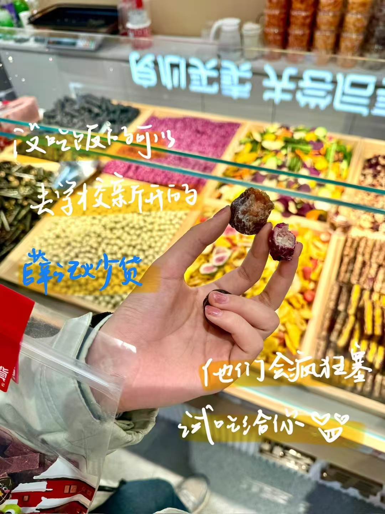
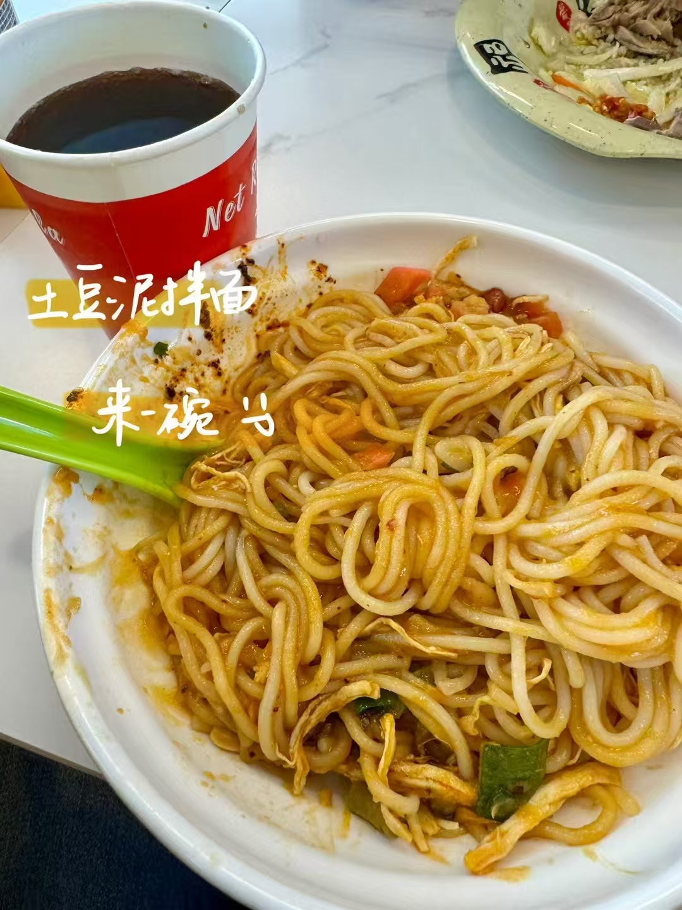
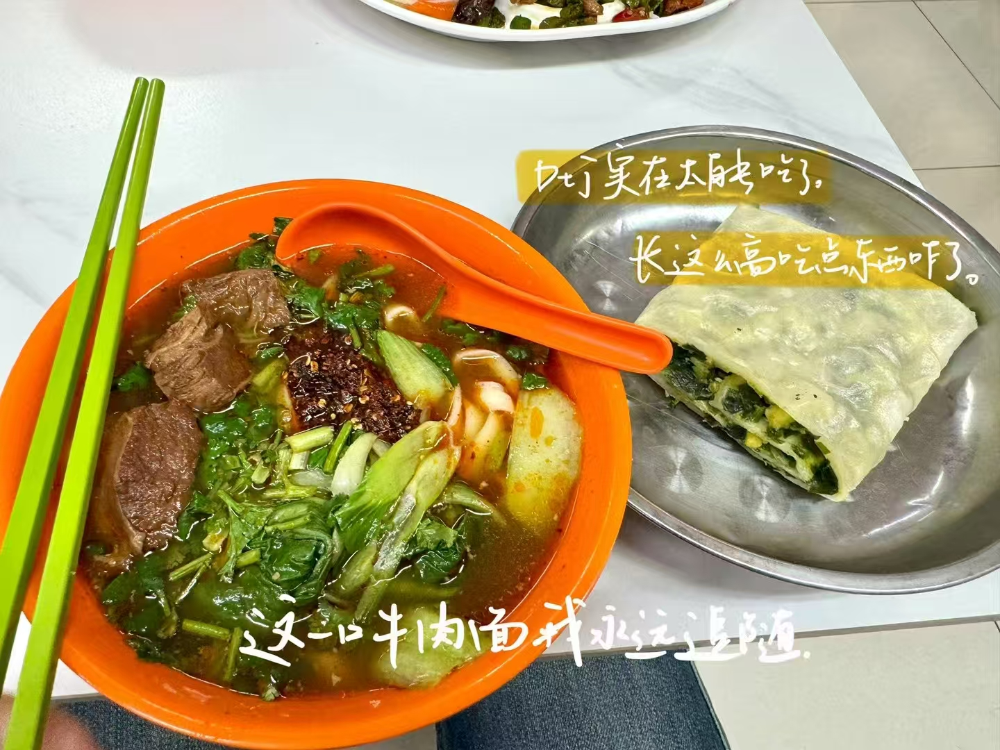
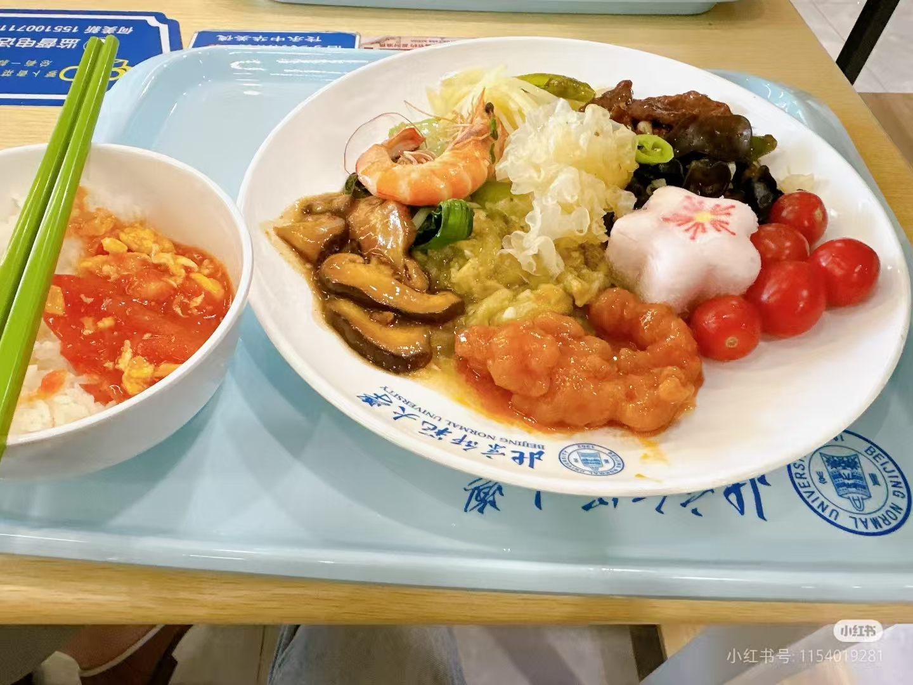
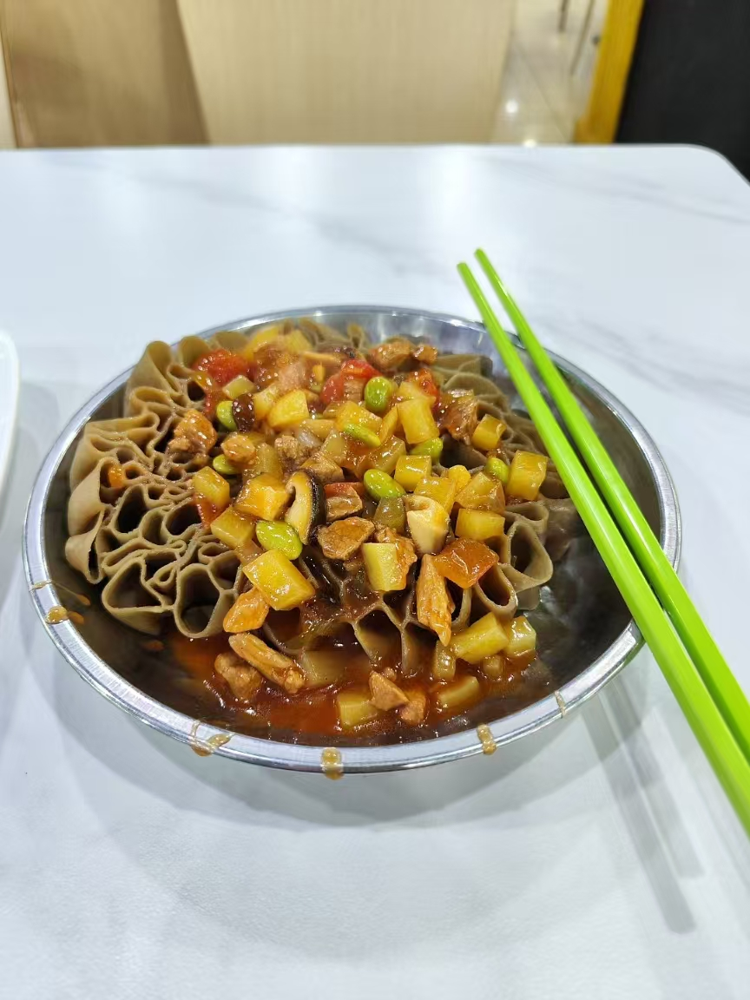
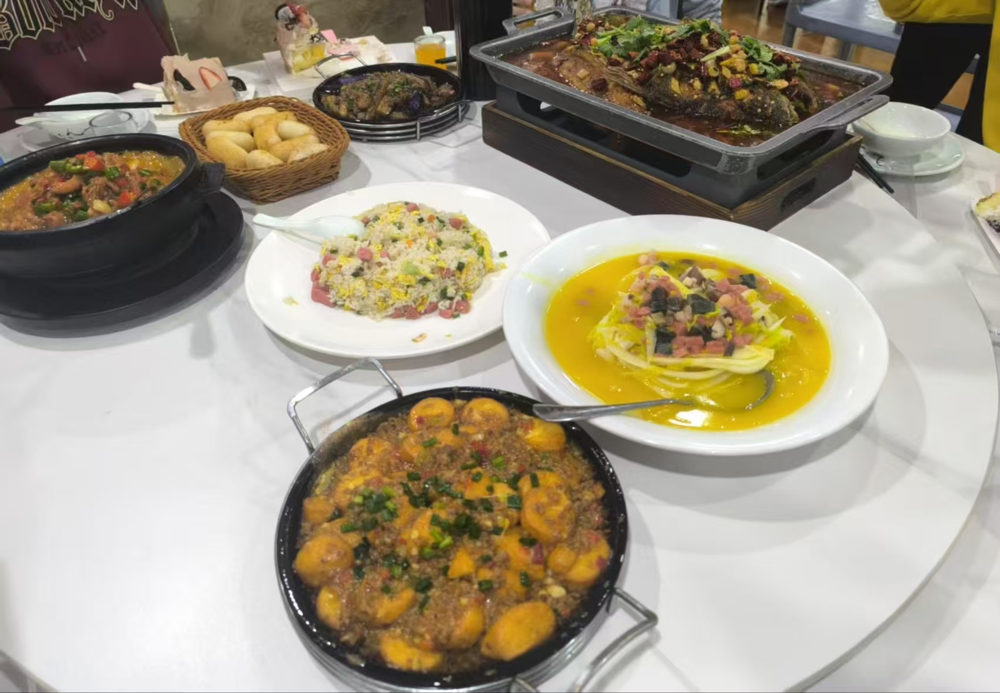
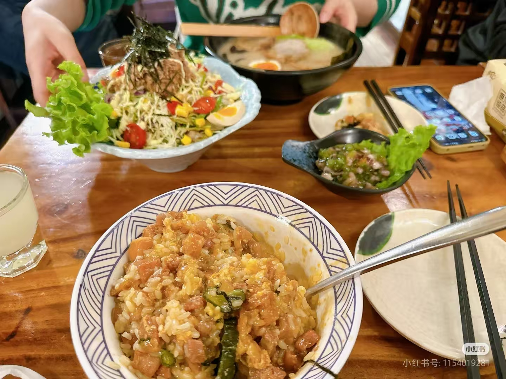
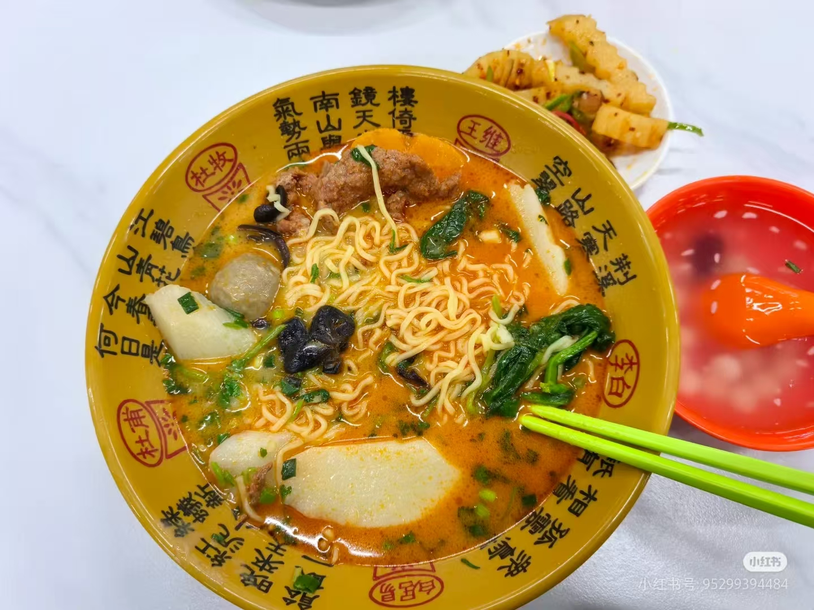

探索北师大校园内的美味佳肴！从传统小吃到国际美食，从学生食堂到特色餐厅，这里汇集了北师大最受欢迎的美食场所，满足你的味蕾需求。
查看校园美食地图
新鲜炒制的坚果和干果，香脆可口，是课间小憩的健康零食选择。

绵密的土豆泥与筋道的面条完美融合，搭配特制酱料，口感丰富，饱腹感强。

传统兰州牛肉面搭配现制煎饼，汤鲜味美，煎饼香脆，完美组合。

采用智能结算系统的自选食堂，数十种菜品每日更新，自由搭配，营养均衡。

来自山西的传统面食，莜面制作，造型独特，搭配特制酱料，风味独特。

提供正宗西北风味菜肴，包括羊肉泡馍、肉夹馍、凉皮等特色美食。

新鲜蔬菜沙拉搭配精致日式料理，健康轻食与异国风味的完美结合。

自选食材，现煮现吃，麻辣鲜香，冬日暖身，夏日开胃的绝佳选择。